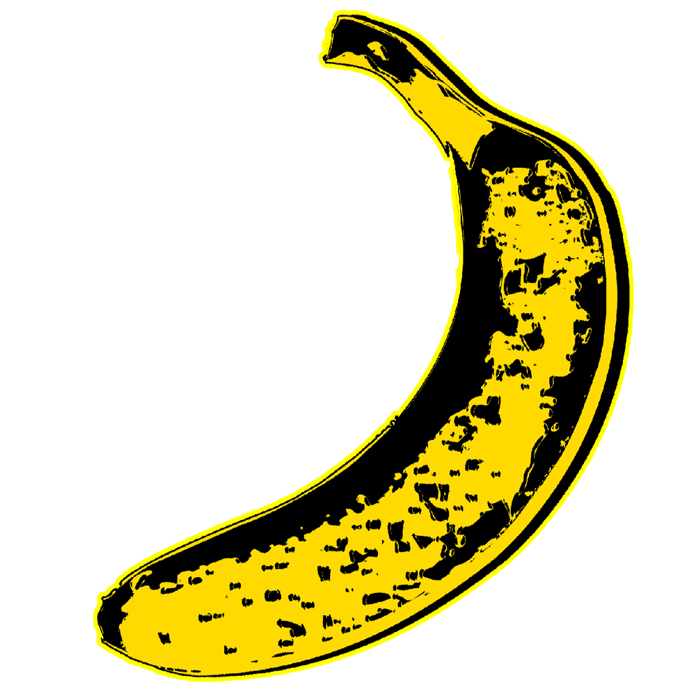
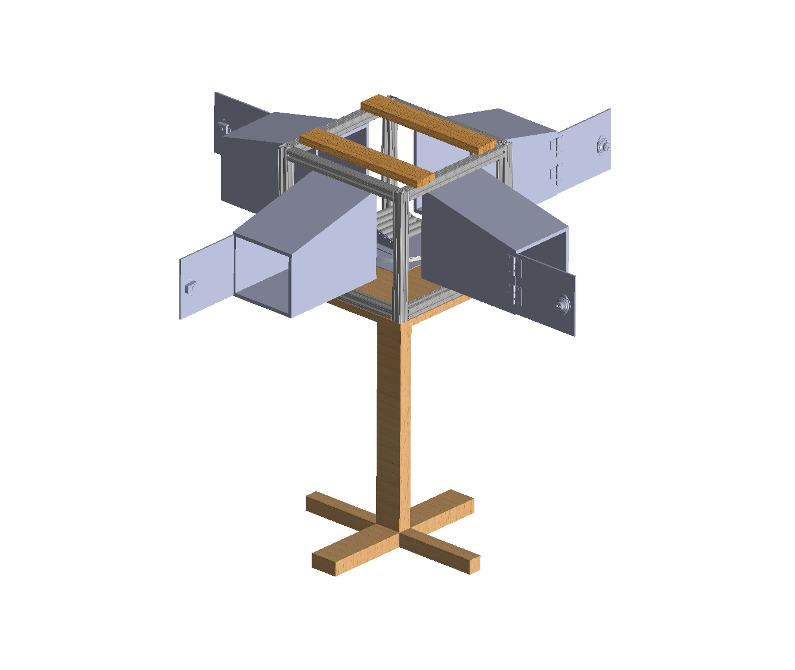

Experimental Flights is a team out of Georgia Tech’s Vertically Integrated Project program. Our goal is to bring drone delivery services to campus using a large quadcopter, package delivery station/locker, and a flight control station. I lead the Hardware side of the team, where we design all hardware systems on both the multiple drones we have on hand and the deliver station assembly. I formerly led the Delivery Station sub team, where we worked very closely with the drone to fabricate the components of delivery station, optimize communication between the drone and locker, and develop a UI for the customer. We’ve made a lot of progress in terms of prototyping these past couple years, and I’ll be sharing important milestones of our journey here!

Quadcopter
insert
Fixed Wing RC Plane
insert
Delivery Station Fabrication
This is a glimpse into the design process for the prototype we produced in Spring 2022. The first picture is our original SOLIDWORKS render, and the following pictures showcase the important systems we used, namely the Lazy Susan, rotating PVC ramp, and the locker. All parts were machined by hand or with CNC using Georgia Tech’s makerspaces.

Locking Mechanism Prototypes
During Fall 2022, we decided to streamline our sub team operation by focusing on a crucial part of our delivery station: the lock. Below are pictures of some of my prototypes for the lock mechanism, which uses PLA and a servo to allow the lock doors to be secured when needed. The servo is attached to a numpad and Arduino and is actuated when the user enters the correct code, which we are able to generate randomly and securely using C++.
Final Presentation Fall 2022
Here is the final presentation we made for the team at the end of the Fall 2022 semester. This goes into detail about the locking mechanism design choices, numpad code, and UI that the customer interacts with when picking up the package from the locker.
Final Presentation Spring 2022
Here is the final presentation we made for the team at the end of the Spring 2022 semester. This showcases the individual systems of the delivery station that we fabricated and the testing process with the drone landing and package drop off systems.